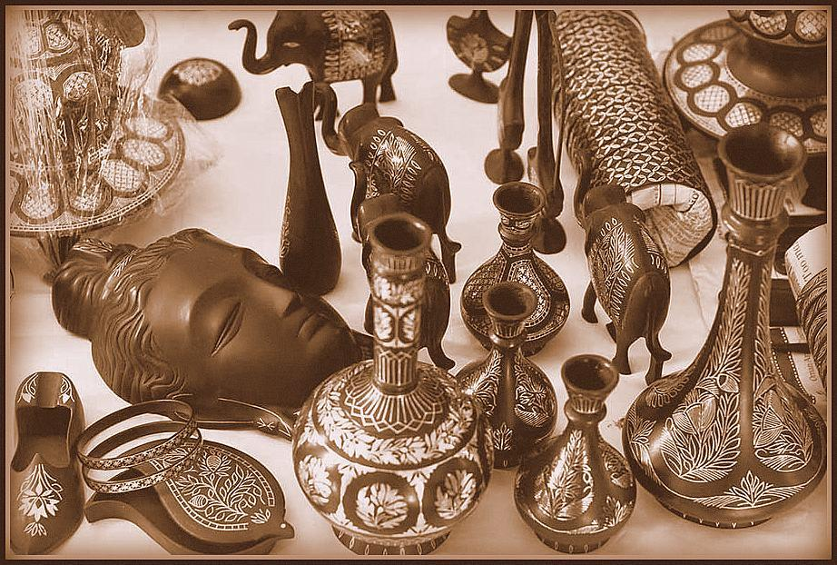

The Craft of Bidri
Bidriware is known to have its roots in ancient Persia but it developed and flourished in Bidar under the Bahmani Sultanate. During the Abbasid period in Persia (750-1258 A.D) copper inlaid objects were used in palaces and merchants’ homes. As the technique grew popular, silver and gold inlay also began and started being practiced in Islamic lands.
The History of the Craft
Bidriware is known to have its roots in ancient Persia but it developed and flourished in Bidar under the Bahmani Sultanate. During the Abbasid period in Persia (750-1258 A.D) copper inlaid objects were used in palaces and merchants’ homes. As the technique grew popular, silver and gold inlay also began and started being practiced in Islamic lands.
About The Artist
Mr. Khaleel Ahmed is a Bidri artist from Hyderabad, Telangana. He has been practising this craft for the past 40 years. This craft has been passed on to him by his father who went to an arts and craft college. The workshop has a total of eight members and is entirely managed by his family. His sons know the art of bidri as well but they work more on the forefront of the business. They take care of the order placement, deliveries and social media handling. Mr. Ahmed was introduced to today's technology - Google Pay, Instagram, Facebook, etc by his sons. Personally for him this has helped him boost his business drastically. The ease of order placement, removal of middlemen and social media presence all have contributed to his business to a great extent.